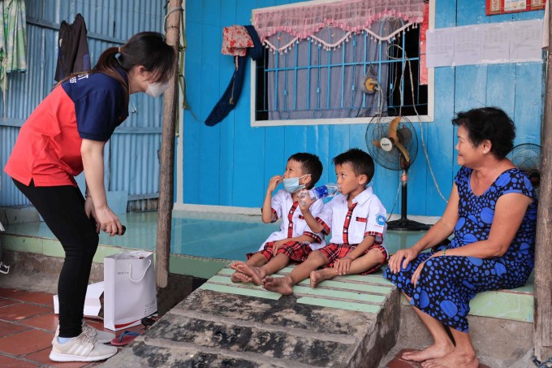
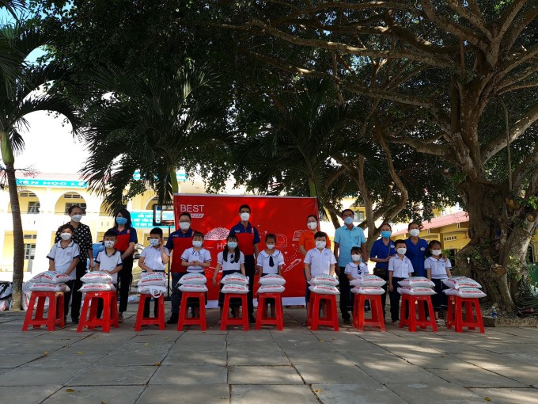
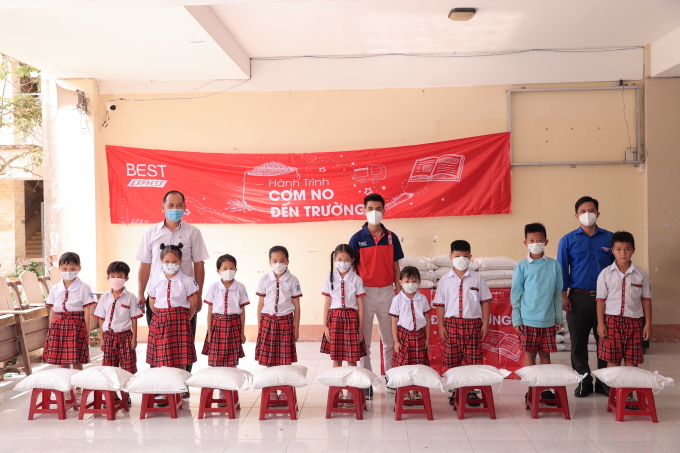
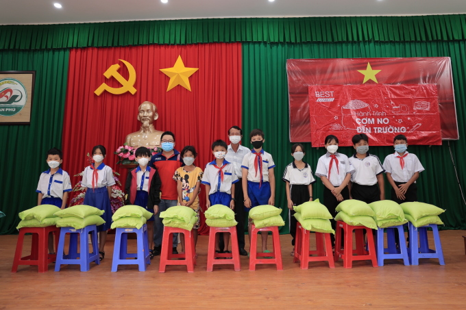
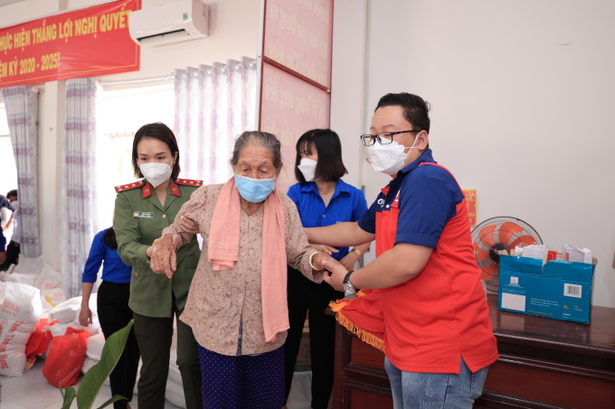
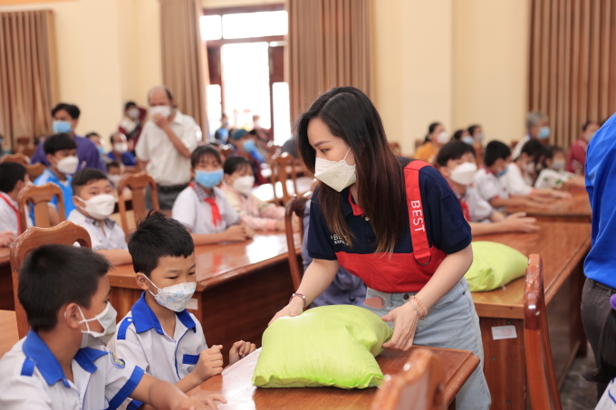
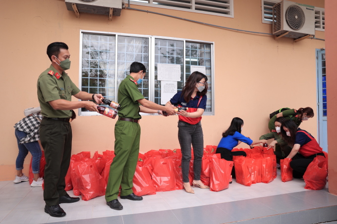
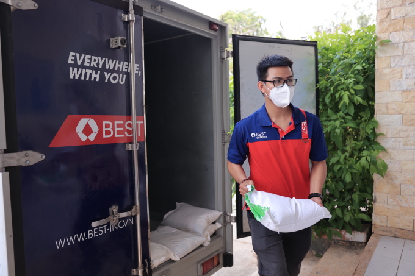

Hành trình ‘Cơm no đến trường’ thành công nhờ nhiều yếu tố
25/03/2022
Mạng lưới bưu cục cùng sự hỗ trợ của chính quyền địa phương giúp hành trình “Cơm no đến trường” và BEST Express hỗ trợ nhiều mảnh đời khó khăn cải thiện đời sống.
Hành trình "Cơm no đến trường" do BEST Express triển khai tại các tỉnh Đồng bằng sông Cửu Long đã khép lại với nhiều thành công, giúp đỡ được hàng nghìn hộ gia đình cùng các em nhỏ hoàn cảnh khó khăn, thiếu ăn, thiếu mặc trên toàn khu vực. Nhờ sự hỗ trợ nhanh chóng, kịp thời của bưu cục cùng chính quyền địa phương, đơn vị tổ chức đã kịp thời giúp đỡ những mảnh đời cơ cực tại đây giữa lúc đại dịch diễn biến phức tạp. Thành công đó không chỉ đến từ nỗ lực của đội ngũ nhân viên BEST Express mà còn nhờ vào sự giúp đỡ, chung tay của bưu cục cùng chính quyền địa phương.
Hành trình mang "Cơm no đến trường" tới các tỉnh miền Nam khởi đầu với câu chuyện của cặp song sinh Duy - Khánh. Hai trẻ bị cha mẹ bỏ rơi, phải sống với ông bà nội đã ngoài 60 tuổi tại Cần Thơ. Nắm được thông tin về hoàn cảnh các bé, BEST Express lập tức khởi hành đến huyện Cờ Đỏ, giúp Duy - Khánh cùng nhiều em học sinh khác tại đây có cơm no, áo ấm, thêm động lực và an tâm học hành.
Trước khi về Cần Thơ, chương trình đã dừng chân tại Trà Vinh, mang hai tấn gạo trao tặng cho các em học sinh khó khăn tại đây. Với sự giúp sức của chính quyền và bưu cục BEST Express Trà Vinh, đoàn đã hỗ trợ khoảng 200 em học sinh, giúp các em bớt nỗi lo cơm áo.
Rời Trà Vinh, chương trình tiếp tục di chuyển đến huyện Cờ Đỏ, Cần Thơ trợ giúp anh em song sinh Duy - Khánh cùng ông bà nội các bé. Đồng thời, "Cơm no đến trường" còn giúp hơn 100 em học sinh khác tại đây có bữa cơm no giữa thời dịch.
Từ Cần Thơ, đội ngũ chương trình lên đường thẳng đến vùng giáp biên giới Campuchia là huyện An Phú, tỉnh An Giang, hỗ trợ 200 em học sinh có hoàn cảnh thiếu thốn, cha mẹ thất nghiệp vì biên giới đóng cửa do dịch bệnh.

Đây cũng là nơi nhân viên BEST Express gặp gỡ Tài, cậu bé mắc bệnh lạ bẩm sinh nhưng vẫn khát khao đến trường. Cha mẹ em luôn nỗ lực vượt khó, làm đủ việc, kiếm tiền, nuôi ước mơ trở thành bác sĩ của hai con. Chính những mảnh đời này đã thôi thúc đội ngũ chương trình tiếp tục vượt hàng trăm km, giúp đỡ thêm nhiều người cần sự hỗ trợ.
Kiên Giang là một trong những điểm đến mang dấu ấn đặc biệt nhất trên hành trình "Cơm no đến trường". Sau khi hưởng ứng lời kêu gọi của BEST Express, Đoàn thanh niên Công an tỉnh Kiên Giang không chỉ giúp chương trình tổ chức trao tặng mà còn góp phần mở rộng quy mô, đưa các phần quà hỗ trợ đến với trẻ nghèo, gia đình khó khăn và người già neo đơn trên địa bàn tỉnh. Mọi người còn được tặng thêm dụng cụ học tập, nhu yếu phẩm, phương tiện đi lại...

Sau Kiên Giang, "Cơm no đến trường" tiếp tục di chuyển ngay trong đêm đến điểm cực Nam Tổ quốc. Với hai tấn gạo, BEST Express đã giúp mang bữa cơm no đến 200 học sinh và hộ nghèo tại Thới Bình, Cà Mau.

Kết thúc buổi trao tặng tại Cà Mau, cả đoàn trở lại TP HCM để bắt đầu chuỗi hoạt động trao tặng tại huyện Củ Chi. Nổi bật trong số những đối tượng nhận quà hỗ trợ tại đây là gia đình 6 anh em mồ côi mẹ, phải vừa học, vừa bán vé số, nhặt ve chai giúp cha mưu sinh.

Khép lại hành trình "Cơm no đến trường" tại ĐBSCL, BEST Express đã vượt quãng đường tổng cộng 700 km, liên tục di chuyển giữa 5 tỉnh Tây Nam Bộ để về đến điểm dừng cuối cùng tại TP HCM.
Tổng cộng 11 tấn gạo đã được phát ra trong suốt hành trình, hỗ trợ hơn 1.000 đối tượng.
Hành trăm nhân lực từ các cơ quan, ban ngành địa phương gồm Huyện đoàn Cờ Đỏ, Cần Thơ, ban phòng trao tỉnh đoàn An Giang, Hội Bảo trợ Người Khuyết Tật và Nạn nhân chất độc da cam/dioxin tỉnh Trà Vinh, Đoàn thanh niên Công an tỉnh Cà Mau, UBND Xã Tân Phú Trung,... đã chung tay thực hiện, làm nên thành công của "Cơm no đến trường". Chính họ đã giúp BEST Express từ khâu tổ chức, lên danh sách đối tượng khó khăn, cần giúp đỡ trong khu vực và tạo điều kiện thuận lợi cho đơn vị hoàn thành sứ mệnh ý nghĩa này
Bên cạnh đó, mạng lưới bưu cục rộng khắp cả nước cũng giúp ban tổ chức dễ dàng vận chuyển gạo xuyên suốt chuyến hành trình. Các bưu cục tại 5 tỉnh ĐBSCL còn điều động xe tải vận chuyển, cung cấp thêm nhân lực, giúp chương trình diễn ra nhanh chóng, an toàn, đưa những túi gạo tình thương trao tận tay các em học sinh và người dân nơi đây.